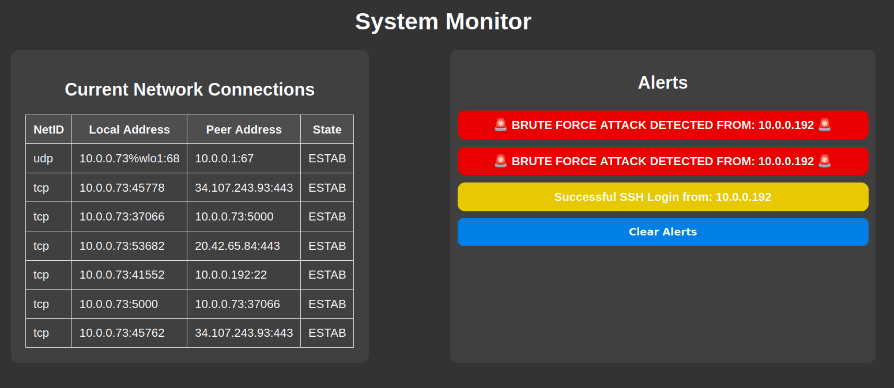

Joseph Garwood
About Me
I'm a passionate developer who loves building efficient and scalable applications. I enjoy working with various technologies and continuously learning new skills.
My main focus is on backend development, security, and automation.
Projects
JSH

A custom Unix shell built in C, designed to enhance core shell functionalities with added user-friendly features and improved command-line interactions.
System Monitor
A Python-based security monitoring tool with a Flask web interface that detects brute-force SSH attacks, provides real-time alerts, and displays current TCP/UDP connections.
Food Waste Management App

A Java-based web app that connects retailers, consumers, and organizations to reduce food waste by enabling the donation or redistribution of surplus food items.
Technical Skills
Programming
Java, PHP, C, Python, SQL
Software & Tools
Linux, Git, Jira, Eclipse, VS Code
Cloud & Containers
Docker, Kubernetes, OpenShift, AWS, Azure
Other Tools
Jenkins, Unit Testing, VMs